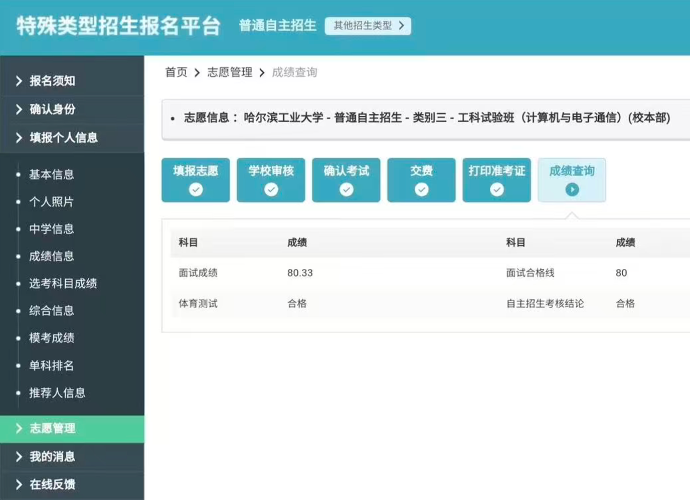
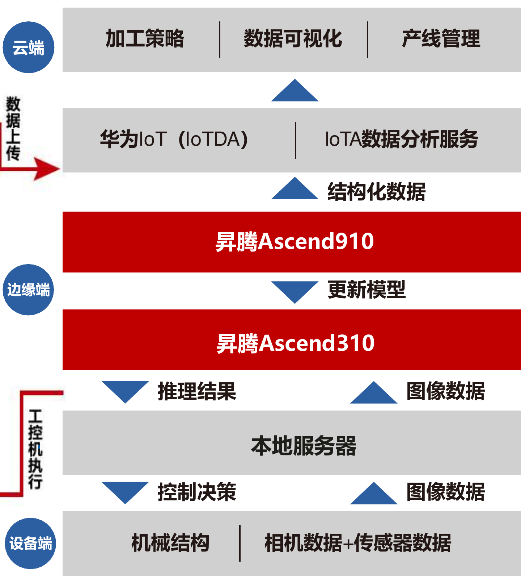
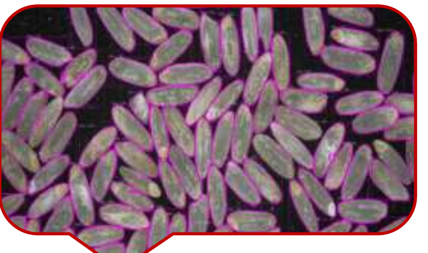
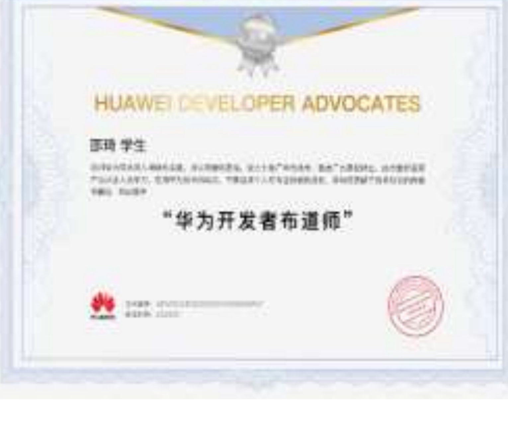

My Story
A timeline of how I got here.
2019
Independent admission assessment, Harbin Institute of Technology
Engineering experimental class in Computer Science and Electronic Communication. My first assessment outside the classroom, and the first time I chose a direction rather than being assigned one.
{kind=link}

2019 – 2023
B.Eng., Harbin Engineering University
College of Intelligent Systems Science and Engineering. Where control theory turned into something I wanted to keep doing.
2019 – 2021
Underwater robotics lab: AUV path planning and adaptive control
Built an eight-thruster AUV around inertial, hydrophone and stereo sensing, with real-time thrust allocation toward a target waypoint that raised transit efficiency by 25%, and an RNN-based global planner that improved dynamic obstacle avoidance by 31%. The lab's team took the world championship at the International Underwater Robot Competition and first place at the China Underwater Robot Competition.
09/2020 – 05/2021
Gravity and terrain-matching navigation, CSSC Systems Engineering Research Institute
Responsible for the matching algorithms and the simulation software: multibeam survey data of the seabed, matched against gravity and terrain references to fix a vehicle's position. The work produced two registered software copyrights — Simulation Platform for Underwater Terrain-Matching Aided Navigation (rank 3 of 4) and Underwater SINS/DVL Integrated Navigation and Positioning Software (rank 4 of 8).
2020 – 2021
Principal investigator, national-level undergraduate innovation training program
National Innovation and Entrepreneurship Training Program for Undergraduates. The first time I had to decide what a project should be, not just do the work.
05/2021 – 05/2022
Multi-sensor localization by factor-graph optimization
At the Intelligent Navigation and Advanced Information Fusion Lab: a tightly coupled LiDAR–visual–inertial system, using spatio-temporal alignment and point cloud registration to calibrate heterogeneous sensor data, plus a dual-antenna GNSS/INS platform. Presented at the China Satellite Navigation Conference.
2021 – 2022
Principal investigator, a second national-level undergraduate innovation training program
A second project under the same national program, again as principal investigator, closed with distinction.
2022
National Silver Award, China International College Students' Innovation Competition
Industry Track, problem posed by Huawei Technologies. I developed the adaptive process control on Huawei's full-stack Ascend AI, bringing the parameters of nine machines on one industrial line into fast coordinated adjustment. Team rank 3 of 15.
09/2022 – 12/2022
Internship, 33rd Research Institute, Third Academy of CASIC
Design of an inertial / satellite integrated navigation system, down to the GNSS-plus-INS hardware terminal.
12/2022
Science and Technology Innovation Pacesetter
Awarded by Harbin Engineering University as an undergraduate, for work in science and technology innovation. Announcement
09/2022 – 06/2023
GNSS Precision Navigation Lab
Combination estimation of multi-source ultra-rapid satellite clock offset products.
09/2023
National First Prize, 18th "Challenge Cup" National Competition
Open Call Special Track of the National College Students' Extracurricular Academic Science and Technology Works Competition. I led the scheme design, algorithm development and on-site commissioning of a cloud–edge–device system on Ascend 910/310 that auto-tunes processing parameters across a rice production line, tripling throughput and allowing several lines in different places to be adjusted in real time. Team rank 1 of 10.
{kind=link}

2023
First paper, and first industry project
A paper accepted at the IEEE International Conference on Mechatronics and Automation, and the Ascend AI rice processing project with my team — which later led to serving as a Huawei Developer Advocate.
2023
Started Ph.D. study
Admitted to the direct-entry Ph.D. program by recommendation, ranked 1 of 11. Control Science and Engineering at Harbin Engineering University, moving toward 3D scene representation and SLAM for multi-robot and embodied AI.
09/2023 – 09/2025
First-Class Academic Scholarship for Doctoral Students
Awarded by Harbin Engineering University in three consecutive years — 2023, 2024 and 2025.
03/2024 – 04/2024
Academic visits in Zurich and London
A month at the Robotic Systems Lab, ETH Zurich, then a month with the Control and Power group at Imperial College London. The first time I saw how the questions get asked elsewhere.
2024
National First Prize, 19th "Challenge Cup" National Competition
Open Call Special Track, second national first prize in this competition. This one was online rice quality inspection by multi-view feature fusion — a Mask R-CNN small-object segmentation algorithm reaching 98.5% accuracy at 200 ms per inspection, covering germ integrity, chalkiness, broken-grain rate and about twenty other indicators. Team rank 2 of 10.
{kind=link}

2024
National Bronze Award, China International College Students' Innovation Competition
Industry Track, problem posed by Huawei Technologies. I designed a ship component recognition algorithm on Ascend — 2D detection plus 3D classification over RGB and depth images, trained on a 6,000-image dataset of 300 small components — and tested it for three months at a shipyard in Wuhu, reaching 99.8% recognition accuracy on the welding line. Team rank 1 of 15.
05/2024 – 09/2024
Huawei: Outstanding Ascend Developer, then Developer Advocate
Named an Outstanding Ascend Developer at the Ascend Developer Conference in May, a Huawei Cloud Pioneer of the Year at HDC in June, and a Huawei Developer Advocate at Huawei Connect in September. The work behind it: migrating DynaBERT, PPO and DQN to the MindSpore framework, and running small-object segmentation on Ascend.
{kind=link}

10/2024
IROS 2024, Abu Dhabi
My first time at a top robotics conference, and the first time I heard my own research area argued about by the people who started it.
2024
Co-founded two companies
CEO of two Harbin-based companies working on fully domestic unmanned systems for agricultural machinery — drive-by-wire chassis, autonomous navigation and field operation, aimed at replacing imported stacks on tractors and harvesters.
12/2024
Nominated for the Chen Geng Scholarship
The Chen Geng Scholarship is the highest scholarship at Harbin Engineering University. I received a nomination — one of only three nominees — rather than the award itself.
2025
Joint Ph.D. training, University of Liverpool
Department of Computer Science — a different country, a different way of asking research questions.